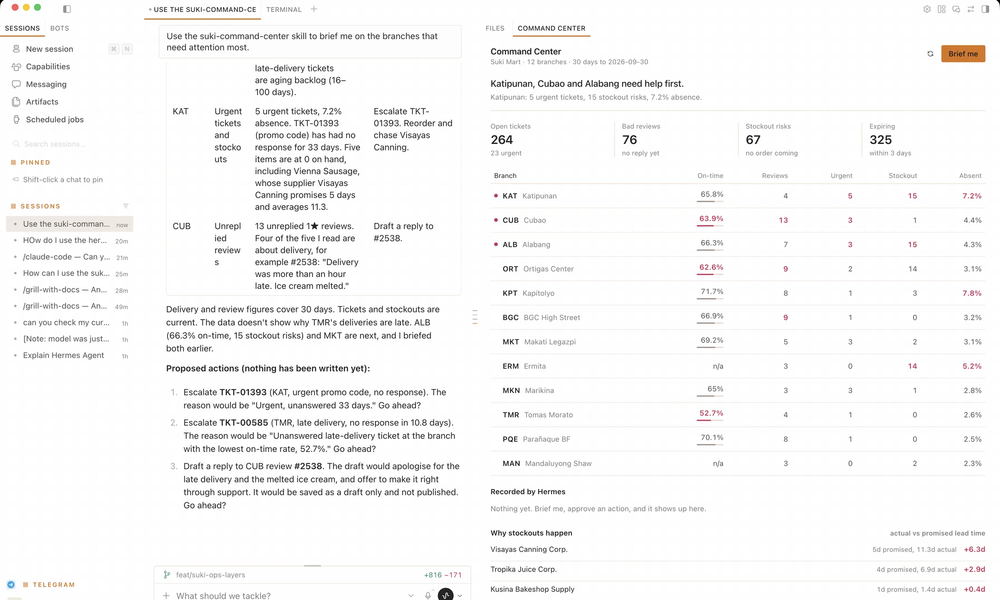
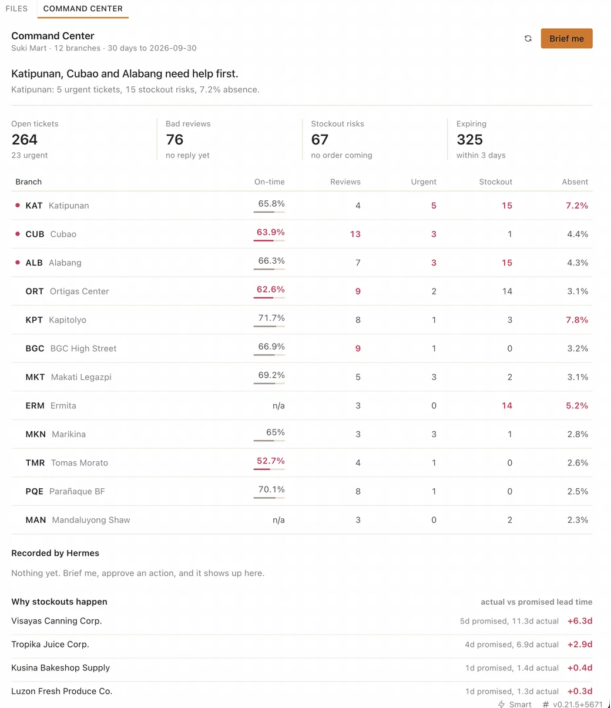
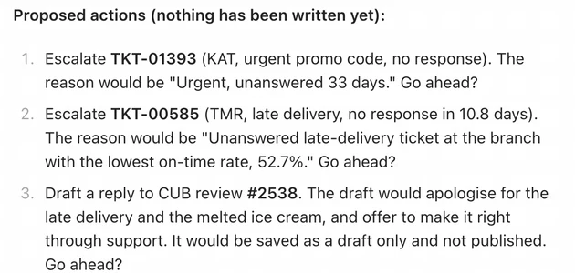

Katipunan, Cubao and Alabang need help first.
Suki Command Center answers the first question a Suki Mart admin asks each morning: which of our 12 branches needs help, and why? It is a Hermes Agent build with three parts. An MCP server reads the sandbox data, a skill tells the agent how to rank and act, and a desktop pane shows the result. The agent can escalate a ticket or save a reply draft, but only after the admin says yes.
Built by team Bantay Suki (Justine, Alex, JP and Gab) during the CAMP / RUN sprint. Bantay means guard in Filipino, and a suki is a loyal customer.
| Branch | On-time | Bad reviews | Urgent | Stockout | Absent |
|---|---|---|---|---|---|
| KATKatipunan | 65.8% | 4 | 5 | 15 | 7.2% |
| CUBCubao | 63.9% | 13 | 3 | 1 | 4.4% |
| ALBAlabang | 66.3% | 7 | 3 | 15 | 4.3% |
| ORTOrtigas Center | 62.6% | 9 | 2 | 14 | 3.1% |
| TMRTomas Morato | 52.7% | 4 | 1 | 0 | 2.6% |
The answer is spread over five tables.
Suki Mart is a fictional grocery chain with 12 branches in Metro Manila. Its sandbox has about 230,000 rows of operations data, and the problems in it are real enough to cost a branch its customers. A head of operations who wants to know where to send help must join deliveries, tickets, reviews, stock, and shifts by hand.

One query core, two doors.
Every number comes from one Python module, suki_core.py. The agent reaches it through MCP tools. The pane reaches it through a small REST backend. Both doors give the same answer, so the chat and the pane cannot disagree about the on-time rate.
desktop/plugin.jsdashboard/plugin_api.pydata/store.dbSKILL.mdmcp-server/server.pyThe pane also sends prompts into the chat. A click on Escalate or Draft reply hands the work to the agent, and the agent asks the admin before it writes. When the chat turn ends, the pane reloads its data, so the change shows up in both places.
What we built in each layer.
The hackathon asks for three layers that connect. Each one below names the files and what they do.
Tools that each answer one business question.
The server exposes 9 read tools and 2 write tools. No tool accepts raw SQL. Each docstring tells the agent when to call it and what the numbers mean.
The two writes are narrow on purpose. Each one adds a row to an ops_actions log, and no tool can publish a reply or change any other table. 11 tests run against a temporary copy of the database.
| Read | |
branch_scorecard | One row per branch with on-time rate, failed deliveries, open and urgent tickets, unreplied bad reviews, stockout risks, expiring items, and absence. |
list_open_tickets | Open or pending tickets, urgent first, then oldest first. |
list_unreplied_bad_reviews | 1 or 2 star reviews with no reply, with the review text. |
list_stockout_risks | Products with 2 days of cover or less and no order pending or in transit. |
list_expiring_stock | Stock that expires within 3 days, largest cost at risk first. |
list_supplier_slips | Suppliers ranked by how far real lead time runs past the promise. |
list_recent_actions | What the agent already escalated or drafted, so it does not repeat itself. |
describe_sandbox, list_branches | Orientation for the agent: tables, row counts, and branch codes. |
| Write, after the admin says yes | |
escalate_ticket | Raises an open ticket to urgent and logs the reason. Running it twice changes nothing. |
draft_review_reply | Saves reply text as a draft for a person to publish. It never publishes. |
A fixed procedure, so the briefing is the same every morning.
The skill triggers on plain requests such as "how are the branches doing" or "what needs attention". It ranks branches the same way the pane does: each branch gets points for its rank on five measures, and the points are summed.
Pane buttons send narrow requests, for example "escalate ticket TKT-01393". The skill skips the scorecard for these, reads the one row, and asks before it writes.
- Score. Call
branch_scorecardfirst, every time. - Pick three. Choose at most 3 branches by combined rank. Skip on-time rate for branches without delivery.
- Drill down. Call only the lists that explain why a branch was picked.
- Check history. Read
list_recent_actionsso the agent does not escalate the same ticket twice. - Propose. Offer at most 3 actions, each tied to a row it read, and ask "Go ahead?".
- Act and report. Call a write tool only after an explicit yes, then report what changed.
A pane that reads like part of Hermes.
The pane uses Hermes theme variables and its own components, so it follows the app in light and dark mode. It reads from its own backend, so it renders without a model call.
- A headline sentence names the 3 branches to help first and the numbers behind the first one.
- The table sorts by any column. Red marks the 3 worst branches on each measure.
- A click opens a branch inline with its tickets, reviews, stockouts, and expiring stock.
- Escalate and Draft reply buttons hand the action to the agent.
- "Recorded by Hermes" lists every write the agent made.

From a click to a changed record.
The full loop runs on a laptop with no cloud database. Every step uses real sandbox data.
- ClickThe admin clicks "Brief me" or Escalate in the pane.
- PromptThe pane sends a request into the active Hermes chat.
- SkillHermes loads the skill and calls the MCP tools in order.
- ApproveThe agent shows the exact ticket or reply text and waits for yes.
- RefreshThe write lands in
ops_actions, and the pane shows it when the turn ends.

This is the agent's own output from the run in the screenshot. Each action cites a ticket or review it read, with the number that justifies it.
Nothing is written yet at this point. The admin answers yes or no for each action.
The same answers in Telegram.
An admin away from the desk can type a command in the Hermes Telegram bot and get the answer back in a second. The reads never wait for a model.
Seven reads that skip the model, one that asks the agent.
Each read command is a Hermes quick_command that runs scripts/bantay.py. The script calls the same suki_core.py as the MCP server and the pane, so a number in Telegram matches the number in the pane.
/bantay hands a plain request to the skill, for example /bantay escalate TKT-01471. It shows the exact ticket and asks "Go ahead?" before it writes, as it does in the desktop.
| Read, no model turn | |
/brief | Top 3 branches to help first, ranked like the pane, plus loyalty points about to expire. |
/tickets | Open tickets, urgent first, then oldest. |
/reviews | 1 or 2 star reviews with no reply, with the review text. |
/stockouts | Products with 2 days of cover or less and no order coming. |
/expiring | Stock that expires within 3 days, largest cost at risk first. |
/suppliers | Suppliers ranked by how far real lead time runs past the promise. |
/actions | What Hermes already escalated or drafted. |
| Agent, with confirmation | |
/bantay <request> | Runs the suki-command-center skill. Writes still need an explicit yes. |
Three decisions we made on purpose.
Each one has a short record in docs/adr or GLOSSARY.md.
The pane does not go through the chat to read data.
A pane must render at once. A model turn takes seconds and costs tokens. A second copy of the SQL would drift, so both doors share one module.
Writes are narrow and logged.
The agent can escalate a ticket or save a draft. It cannot publish, delete, or edit any other table. The admin and the judges can see exactly what it is able to touch.
Every measure has one definition.
"Stockout risk" means 2 days of cover or less with no order coming. "Unreplied bad review" means 1 or 2 stars with no reply. The agent, the pane, and the tests use the same words.
Run it on your laptop.
You need Hermes Agent and Hermes Desktop, uv, and Python 3.10 or newer. The full guide is in docs/SETUP.md.
After the restart, open Capabilities, then Plugins, and turn on the Desktop row of suki-command-center. Run python data/seed.py to reset the data before a demo.
# 1. Tests run on a temporary copy of the database
python3 -m unittest discover -s tests
# 2. Copy the skill and plugin into ~/.hermes
./scripts/install.sh
# 3. Register the MCP server with an absolute path
hermes mcp add suki --command uv \
--args run "$(pwd)/mcp-server/server.py"
# 4. Add suki-command-center to plugins.enabled
# in ~/.hermes/config.yaml, then restart Hermes
hermes mcp test suki # Tools discovered: 11Where each judging criterion shows up.
The CAMP / RUN rubric has seven criteria and 100 points. This table points to the evidence for each one.
| Criterion | Points | Evidence |
|---|---|---|
| MCP server | 20 | 11 domain tools with no SQL passthrough, 2 logged writes, and 11 tests. |
| Skill | 20 | A six-step procedure, the same ranking as the pane, a single-action path, and written pitfalls. |
| Desktop plugin | 20 | Native components and theme variables, sortable table, inline drill-down, loading and error states. |
| Integration | 10 | Pane click, then skill, then MCP write, then the pane refreshes on its own. |
| Relevance | 15 | Built on the problems planted in the data: unanswered reviews, stockouts, a late supplier, an aging backlog. |
| Uniqueness | 10 | One core behind two doors, and a ranking the admin can read and check. |
| Demo and pitch | 5 | A five-step script in docs/DEMO.md and the slides. |